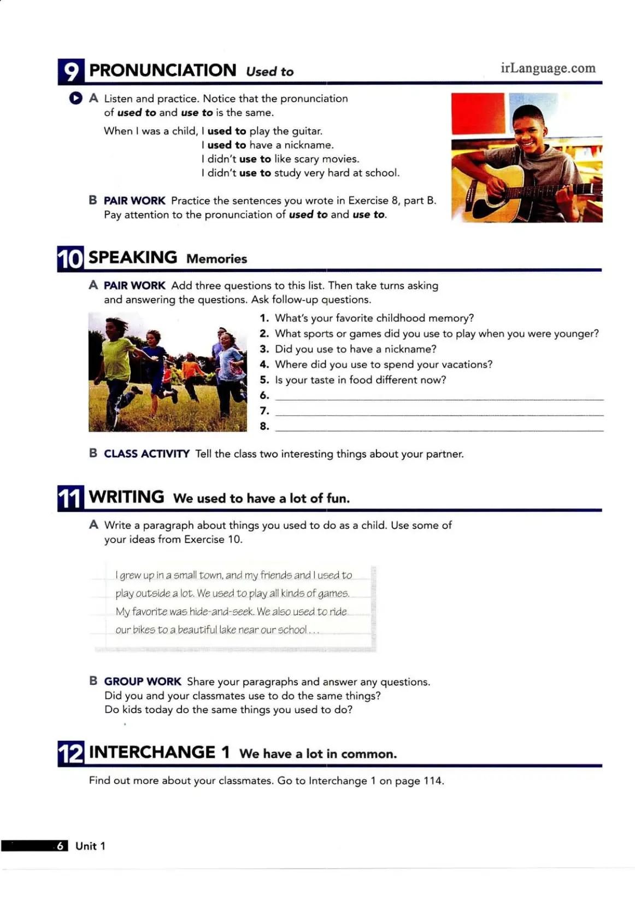

Student's Book Page 6
9. Pronunciation: used to
Listen and practice. Notice that the pronunciation of used to and use to is the same. It sounds like "/ˈjuːstə/".
Practice Your Pronunciation
Practice reading these sentences aloud. Try to record your voice and compare it to the examples in the audio.
- I used to live in a small town.
- I didn't use to like broccoli.
- What did you use to do on weekends?
10. Speaking: Memories
Let's prepare for our conversation. First, add three more questions you want to ask about childhood memories.
1. What's your favorite childhood memory?
2. What sports or games did you use to play when you were younger?
3. Did you use to have a nickname?
4. Where did you use to spend your vacations?
5. Is your taste in food different now?
6.
7.
8.
11. Writing: We used to have a lot of fun.
Write a short paragraph (3-5 sentences) about things you used to do as a child. You can use your ideas from the speaking exercise above.
Review Games & Activities
Game: Past Tense Wh- Questions
Let's practice making questions with "was/were" and "did". Unscramble the words to make correct questions.
Activity: Collaborative Story Builder
Let's build a story together, like we do in our Google Doc! We will take turns writing one sentence at a time about a fictional character's childhood. Try to use Past Simple and "used to".
Story Starter:
"There was once a carpenter named Leo who grew up in the mountains of British Columbia..."
Vocabulary Review: Quizlet Flashcards
Don't forget to practice the vocabulary for Unit 1 on Quizlet!
Go to Quizlet SetHomework 📚
For our next class, please complete the following exercises from your Workbook for Unit 1:
- Page 3: Exercise 4 (Part B only)
- Page 4: All exercises (5 and 6)
- Page 5: Exercise 7
This will be great practice for reading and for using `used to`. See you next time!